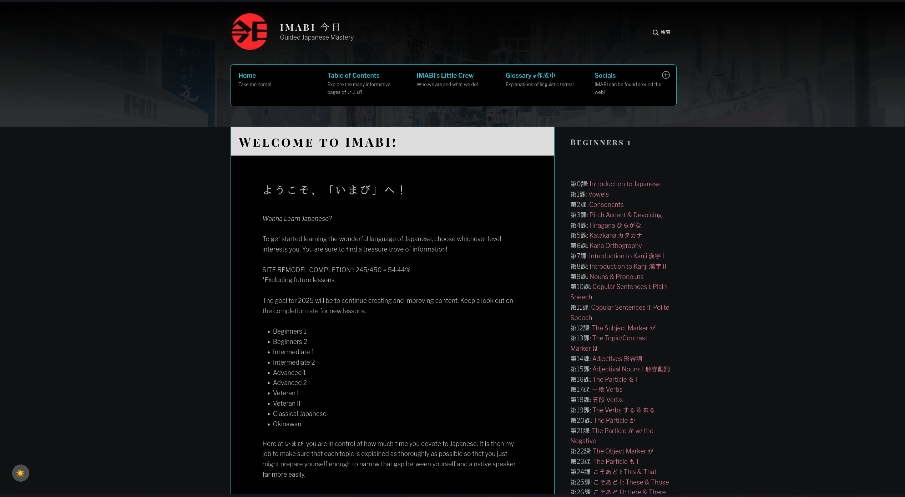

Imabi
Imabi on erittäin laaja kieliopin verkkosivu, et löydä tätä tarkempaa kieliopin opasta mistään, se käy läpi kaiken mitä voisit kuvitella mutta jos lähdet käyttämään tätä käytät myös paljon aikaasi siihen että opiskelet kielioppia sen sijaan että ymmärrät sitä. Suosittelisin pysymään tästä kaukana ja käyttämään sitä enemmän referenssinä kun opiskelumateriaalina.